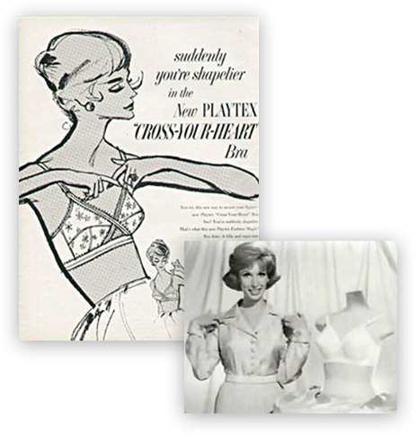

« Il y a toujours trop de mousse ». Marie, âgée de 21 ans, peine à trouver son bonheur dans
les rayons du magasin Etam des Halles à Paris. Rouge, jaune, bleu canard, fuchsia, il y en a de toutes les couleurs. Des soutiens-gorge sont soigneusement accrochés, des ronds recouverts de dentelle.
Ils sont rangés par taille, de la plus petite à la plus grande. « Je n’aime pas quand c’est trop rembourré », explique l’étudiante en médecine. De la mousse, oui mais pas trop.
« Je fais un bonnet C, je ne veux pas avoir une poitrine plus grosse ». Cette question du rembourrage « limite le choix » selon elle. « Je trouve ça stigmatisant,
comme si on voulait à tout prix nous faire avoir des seins plus gros. » Léa, non plus, n’aime pas les armatures et les bonnets épais. « Je préfère le confort, peu m’importe d’avoir un ensemble,
je veux porter quelque chose de confortable ». La jeune femme fait partie des clientes qui optent pour le sans-armature.
C’est la grande tendance de ces dernières années, avec également le no-bra, ces femmes qui zappent le soutien-gorge. Le triangle fait partie de ces formes de soutiens-gorge dénuées d’armatures.
L'étude Lingerie de l'Institut français de la mode (IFM) note justement cette tendance, avec
« un retour des modèles triangles souples plébiscités par les femmes d’aujourd’hui ». Pas question pour les marques de lingerie de
passer à côté de cette manne alors que le marché français représente 2,78 milliards d’euros pour l’année 2016.
Dans le secteur, les femmes consacrent un cinquième de leurs dépenses d’habillement à leurs dessous, à savoir 100,6 € par an.
Les experts de l’IFM précisent justement que « la lingerie résiste mieux que les autres segments de l’habillement féminin à
la baisse de la consommation depuis 2008 ». Parmi les enseignes de lingerie, les mastodontes Etam, Undiz, Rougegorge, le groupe Chantelle (Darjeeling, Passionata...),
d’autres plus confidentielles comme Ysé, Girls in Paris, Noo ou Le Slip français, toutes proposent du sans armatures. Chez les plus âgées aussi, les modèles classiques sont délaissés.
« Le sans armature par exemple est demandé par toutes les tranches d’âges », souligne une vendeuse spécialisée, mètre souple autour du cou.
« Globalement, les femmes n’aiment pas que le soutien-gorge ajoute du volume ». Autre difficulté pour les femmes : trouver la bonne taille. À en croire plusieurs experts du secteur et conseillères, ce n’est pas un mythe.
Les femmes ne connaissent pas leur taille de soutien-gorge, d’autant que celle-ci change d’une marque à l’autre. Force est de constater qu’en matière de lingerie, les attentes des femmes aujourd'hui
n’ont plus rien à voir avec celles d’hier. Une enquête de l’IFM, réalisée en juin dernier, indique que le confort est
le premier critère d'achat de lingerie féminine (69,2%), avant le rapport qualité-prix et le style. Au cours des dernières décennies,
les formes de soutiens-gorge ont beaucoup changé, il suffit de regarder les silhouettes des actrices de la série américaine Mad Men. Dans les années 1950-1960, la mode est aux poitrines en pointe. Un modèle s’impose alors,
le cœur croisé de Playtex, né en 1954. Un sans armatures aux « bonnets couvrants et à la structure en croix ».
 Le cœur croisé / Archives Playtex En revanche, dans les années 1980, ce sont les « produits seconde peau » qui connaissent le succès.
Avec eux, « l’impression de ne pas porter de soutien-gorge » sous les vêtements. Quant à la forme, elle modèle les seins, explique Nathalie Ruelle,
professeure à l’Institut français de la mode, à l’image du « Nuage » de Lejaby, qui rend invisible les tétons. La tendance, soutenue alors par le marché américain, se poursuit dans les années 1990 avec les produits « paddés » - conçus avec de la mousse
donnant des seins très ronds. « En parallèle, il y a un grand effet Wonderbra avec des push up qui ramènent les seins au centre du torse et les soulèvent », souligne Nathalie Ruelle. “Il y a un affranchissement vis-à-vis
des diktats esthétiques.” Dans son ouvrage, Le corps des femmes. La bataille de l’intime, Camille Froidevaux-Metterie consacre
un chapitre à la poitrine intitulé des « Seins comme des visages ». Selon elle, au-delà des seins,
les femmes réfléchissent davantage qu’auparavant à ce qu’elles portent, elle parle du « tournant génital » du féminisme.
La professeure de sciences politiques à l’Université de Reims a observé un « phénomène de résistance » de
la part des femmes. Elle explique que les femmes aspirent désormais à plus de confort. « Il y a un affranchissement vis-à-vis des diktats esthétiques »,
illustré par le refus de porter des soutiens-gorge. « Il y a une volonté féministe d’assumer sa poitrine telle qu’elle est ».
Un triangle, par exemple permet cette liberté, le plus souvent seule de la dentelle recouvre la poitrine. « Le modèle qui impose les soutiens-gorge
‘coqués’ c’est une forme qui n’existe pas, les seins ne sont pas ronds et fermes comme cela », insiste Camille Froidevaux-Metterie.
Les marques ont compris leur intérêt à développer les modèles sans-armatures. Toutes surfent sur cette tendance. « C’est ce que les femmes nous demandent le plus », glisse une conseillère Princesse Tam-Tam.
La marque met en avant ces modèles dans ces publicités. Tout comme la récente campagne Chantelle, où une mannequin arbore un ensemble nude : brassière et culotte taille haute, la ligne Softstretch.
Mêmes codes ou presque chez Etam : la première enseigne de lingerie en France promeut sa « French liberté » dans sa campagne de l’été 2019.
Laetitia Casta et Constance Jablonski portent des soutiens-gorge sans armatures, un triangle pour la première et un bandeau pour la seconde.
Ces pièces sont aussi plus faciles à fabriquer que les modèles traditionnels : la corseterie - avec armatures - devient alors lingerie - sans. « C’est moins cher à fabriquer, c’est environ 25 minutes de travail », reconnaît Christelle Bois, directrice de la marque Indiscrète,
contre une heure pour un modèle avec armatures.
À Chauvigny, dans la Vienne, trois anciens salariés d’Aubade ont fondé cette entreprise de corseterie entièrement made in France, en novembre 2010. Ici, parmi les dix collections annuelles, les employés fabriquent des modèles classiques, mais aussi des sans armatures. « Nous avons l’emboîtant, le classique, le corbeille et parfois des triangles », détaille Christelle Bois.
Parmi les 31 personnes qui travaillent là, neuf sont des anciennes salariées d’Aubade, qui ont embarquées avec elles le savoir-faire nécessaire à la corseterie. « Un soutien-gorge avec armatures c’est environ 42 pièces assemblées ».
Il y a les armatures, du galon pour les bretelles, le dos, la dentelle sur les bonnets, la structure.... Ce chiffre peut monter jusqu’à 100 selon les marques. Les étapes de fabrication d'un soutien-gorge, chez Indiscrète (Chauvigny, Vienne) Marie SASIN Du patron à l’assemblage de la structure, en passant par la découpe de la dentelle grâce à un cutter roulette, les petites mains se relaient sur la centaine de pièces que produit quotidiennement l’entreprise. Pour la prochaine collection,
Christelle Bois a par exemple imaginé un sans-armature en dentelle à pois noirs. Ce type de forme représente pour Indiscrète l’opportunité de séduire une clientèle plus jeune.
De nouvelles attentes
Un intérêt pour les enseignes de lingerie
Une différence de savoir-faire

Dans la Vienne, Indiscrète fabrique des soutiens-gorge "made in France"
Davantage de naturel
Pendant longtemps il était difficile de trouver de trouver des modèles sans armatures et sans mousse. « Aujourd’hui, les marques proposent moins de coques, avec ou sans armatures. Nous sommes sur des formes plus naturelles, épurées », explique Nathalie Ruelle, de l’Institut français de la mode.
Cette épure justement a des implications sur le corps. Changer la forme du dessous modifie la forme du dessus : les formes de soutiens-gorge sans-armatures transforment les silhouettes des femmes, avec des seins moins ronds, moins hauts, plus plats. Un sans armature peut soutenir une poitrine allant jusqu’à un bonnet C, voire D, selon sa qualité. La bande élastique sous les seins est alors déterminante.
Alors que les corps des femmes sont soumis à des changements tout au long de leurs vies (puberté, grossesse, ménopause…), les seins varient eux aussi. « Il y a des changements de paramètres constants », confirme Marie Montliaud, de la Fédération française de la maille et de la lingerie et du balnéaire. L’exemple le plus probant est sans doute celui des règles. Comme pour les jeans, il y a des soutiens-gorge que l’on peut porter lors de son syndrome prémenstruel (SPM). Selon elle, le marché de la lingerie s’oriente vers l’ultra-personnalisation, de la même façon que l'aspect stretch des jeans a permis à toutes les morphologies ou presque de s’approprier la forme skinny, les matières et les formes des soutiens-gorges permettent de répondre à ces variations. « On peut imaginer un soutien-gorge d’avant règles, un d’après règles, un modèle pour l’été et enfin un autre pour l’hiver », explique-t-elle, « sans oublier l’aspect ludique ». L’autre défi de l’ultra-personnalisation est de la rendre possible de façon industrielle.
Indiscrète, par exemple, propose déjà à ses clientes d’avoir un produit personnalisé, grâce aux conseillères de vente à domicile. « S’il faut allonger un dos ou faire en sorte que les bretelles ne tombent plus, nous pouvons le faire. Ce n’est pas du sur-mesure mais pas loin », sourit la directrice. En effet, sur la table de la finisseuse, chargée notamment de vérifier les pièces et
de couper les fils disgracieux, des paquets « rallonge dos + 2cm », « recentrer les dos » ou encore « bretelles + 3 cm ».
“L'activewear porte les nouveautés
en ce moment.” Dans les linéaires, les formes actuelles s’inspirent largement de l’activewear, venu des vêtements de sport. « Le yoga par exemple est une tendance forte de
l’activewear. C’est l’activewear qui porte les nouveautés aujourd’hui », détaille Marie Montliaud, chargée de projets Innovation et développement durable à la Fédération de la maille et
de la lingerie. Les tissus utilisés s'inspirent largement des tissus bain : résistance au soleil, au chlore, à l’abrasion et enfin
la nécessité de sécher rapidement et de ne pas laisser se développer les bactéries. « Par exemple, un legging de sport aussi doit résister à l’abrasion, entre les cuisses », explique Marie Montliaud. La tendance des brassières et autres sans armatures, si elle permet plus de confort, apporte aussi plus de souplesse et donc davantage de naturel. Les évolutions techniques permettent de prendre en compte la diversité des formes de seins.
La société Endeer, fondée par Mathilde Alloin et Claire Chabaud, a développé un soutien-gorge
sur-mesure, fabriqué grâce à un scan 3D de la poitrine. « Shape » se veut donc spécifique à chaque cliente grâce à des armatures et bonnets adaptés. Mais il va falloir preuve de patience, cette technologie n’est pas encore disponible sur le marché.
En attendant, certaines femme ont décidé de se passer de soutien-gorge. « Honnêtement, j’ai
du mal à me souvenir de la dernière fois où j’en ai porté, en dehors du sport », avoue une ex-consommatrice.
Marie Sasin